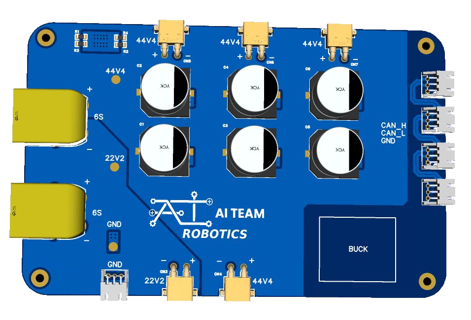
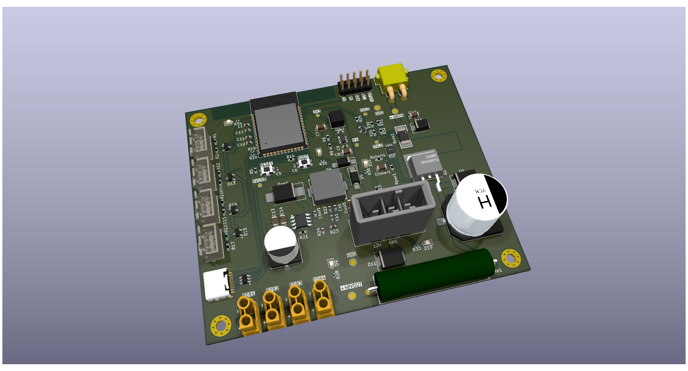
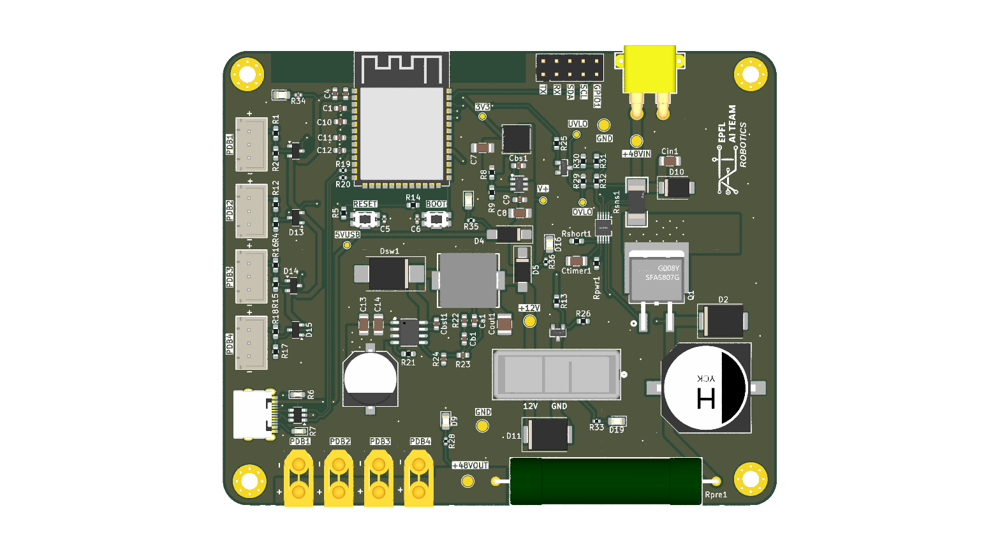
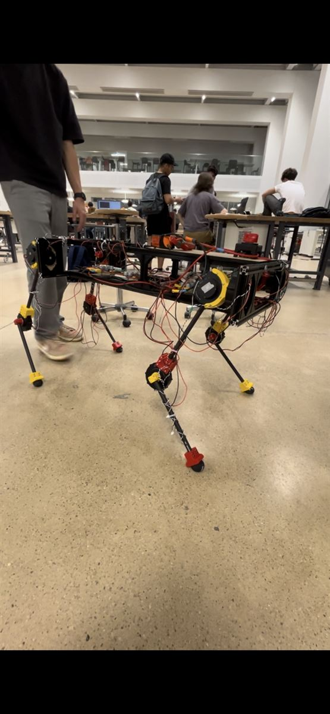

Overview
Led the BARK team in the development of a quadruped robot called BYTE. Served as Project Leader (PL) with full project oversight, while personally designing the Pre-Charge Circuit and PDB to manage high-current distribution and inrush current protection.
The core challenge involved managing extreme power spikes and protecting sensitive embedded electronics during startup sequences. Both boards were designed from scratch to handle heavy loads, ensuring safe operation and mitigating inrush currents that could degrade the battery management system.
- Personal Contribution
- Project Difficulty
| Area | Personal Contribution | Project Difficulty |
|---|---|---|
| Mechanics | 5 | 9 |
| Electronics | 9 | 9 |
| Software | 3 | 9 |
Gallery



